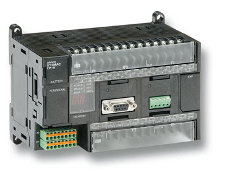
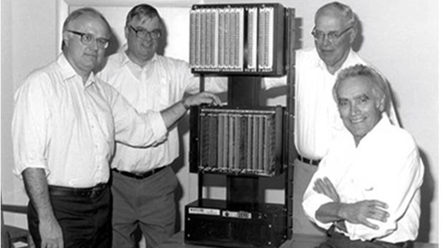
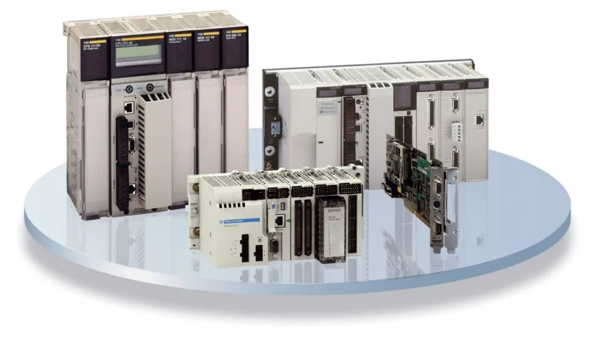

Kenapa PLC?

PLC dalam dunia industri sudah dirasakan sendiri oleh berbagai perusahaan, baik kecil hingga besar. Perkembangan zaman membawa kemajuan teknologi di berbagai sektor kehidupan dan salah satunya dalam industri bisnis. Kehadiran PLC memungkinkan industri untuk menciptakan sistem terpusat sehingga kegiatan dalam industri menjadi lebih efektif dan efisien. PLC didesain sedemikian rupa untuk memudahkan penggunanya dalam mengatur berbagai kegiatan industri.
Sejarah PLC

PLC pertama kali diperkenalkan pada tahun 1960-an. Alasan utama perancangan PLC adalah untuk menghilangkan beban ongkos perawatan dan penggantian system control mesin berbasis relay. Bedford Associates (Bedford, MA) mengajukan usulan yang diberi nama MODICON (Modular Digital Conntroller) untuk perusahaan-perusahaan mobil di Amerika. Sedangkan perusahaan lain mengajukan system berbasis computer. Modicon 084 merupakan PLC pertama di dunia yang digunakan pada produk komersil.
Saat kebutuhan produksi berubah maka demikian juga dengan system control-nya. Hal ini menjadi sangat mahal jika perubahannya terlalu sering. Karena relay merupakan alat mekanik, maka tentu saja memiliki umur atau masa penggunaan terbatas, yang akhirnya membutuhkan jadwal perawatan yang ketat. Pelacakan kerusakan atau kesalahan menjadi cukup membosankan jika banyak relay yang digunakan. Bayangkan saja sebuah panel control yang dilengkapi dengan monitor ratusan hingga ribuan relay yang terdapat pada system control tersebut.Bagaimana kompleksnya melakukan pengkabelan pada relay-relay tersebut.
Pada pertengahan tahun 1970-an, teknologi PLC yang dominan adalah sekuenser mesin kondisi dan CPU berbasis bit-slice. Prosesor AMD 2901 dan 2903 cukup popular digunakan dalam MODICON dan PLC A-B. Microposesor konvensional kekurangan daya dalam menyelesaikan secara cepat logika PLC untuk semua PLC, kecuali PLC kecil. Setelah mikroposesor konvensional mengalami perbaikan dan pengembangan, PLC yang besar-besar mulai banyak menggunakannya. Hingga saat ini ada yang masih berbasis pada AMD 2903. Kemampuan komunikasi pada PLC mulai muncul pada awal-awal tahun 1973. Sistem yang pertama adalah Modbusnya MODICON. Dengan demikian PLC bisa melakukan komunikasi dengan PLC lain dan bias ditempatkan lebih jauh dari lokasi mesin sesungguhnya yang dikontrol. Sekarang, kemampuan komunikasi ini dapat digunakan untuk mengirimkan dan menerima berbagai macam tegangan untuk membolehkan dunia analog ikut terlibat. Sayangnya, kurangnya standarisasi mengakibatkan komunikasi PLC menjadi mimpi buruk untuk protocol-protokol dan jaringan-jaringan yang tidak compatible. Tetapi bagaimanapun juga, saat itu merupakan tahun yang hebat untuk PLC.
Pada tahun 1980-an dilakukan usaha untuk menstandarisasi komunikasi dengan protocol otomasi pabrik milik General Motor (General Motor’s Manufacturing Outomation Protocaol (MAP)). Juga merupakan waktu untuk memperkecil ukuran PLC dan pembuatan perangkat lunak pemrograman melalui pemrograman simbolik dengan computer PC dari pada terminal pemrogram atau penggunaan pemrogram genggam (handheld programmer). Sekarang PLC terkecil seukuran dengan sebuah control relay tunggal (seperti produk ZEN Programmable Relay dari Omron). Tahun 1990‑an dilakukan reduksi protocol baru dan modernisasi lapisan fisik dari protocol-protokol popular yang bertahan pada tahun 1980-an. Standart terakhir (IEC 1131-3) berusaha untuk menggabungkan bahasa pemrograman PLC dibawah satu standart international. Sekarang bias dijumpai PLC-PLC yang dapat diprogram dalam diagram fungsi blok, daftar instruksi, dan teks terstruktur pada saat bersamaan.
Apa Itu PLC?

Programmable Logic Controllers (PLC) dirancang untuk menggantikan suatu rangkaian relay sequensial dalam suatu sistem kontrol. Selain dapat diprogram, alat ini juga dapat dikendalikan, dan dioperasikan oleh pengguna yang tidak memiliki pengetahuan di bidang pengoperasian komputer secara khusus.
Sebuah PLC dapat melakukan fitur‑fitur berikut ini:
- Programmable, menunjukkan kemampuan dalam hal memori untuk menyimpan program yang telah dibuat yang dengan mudah diubah-ubah fungsi atau kegunaannya.
- Logic, menunjukkan kemampuan dalam memproses input secara aritmatik dan logic (ALU), yakni melakukan operasi membandingkan, menjumlahkan, mengalikan, membagi, mengurangi, negasi, AND, OR, dan lain sebagainya.
- Controller, menunjukkan kemampuan dalam mengontrol dan mengatur proses sehingga menghasilkan output yang diinginkan.
Cara kerja sebuah PLC adalah menerima sinyal masukan proses yang dikendalikan lalu melakukan serangkaian instruksi logika terhadap sinyal masukan tersebut sesuai dengan program yang tersimpan dalam memori lalu menghasilkan sinyal keluaran untuk mengendalikan aktuator atau peralatan lainnya.